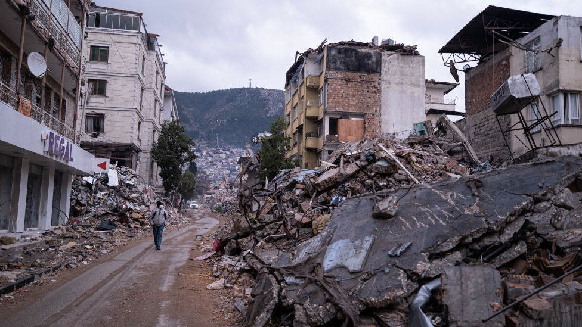
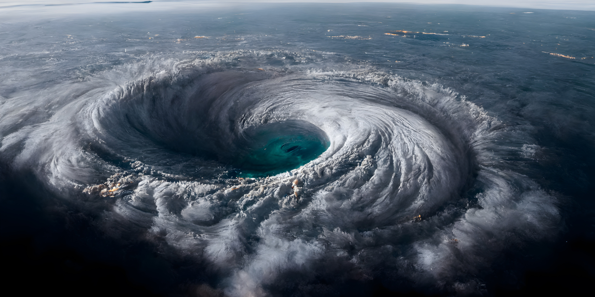
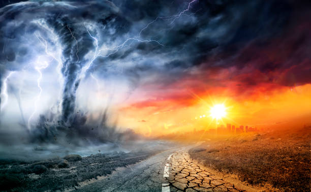
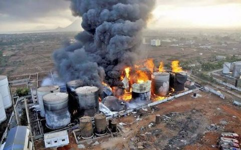
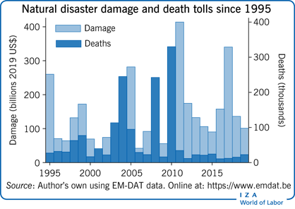
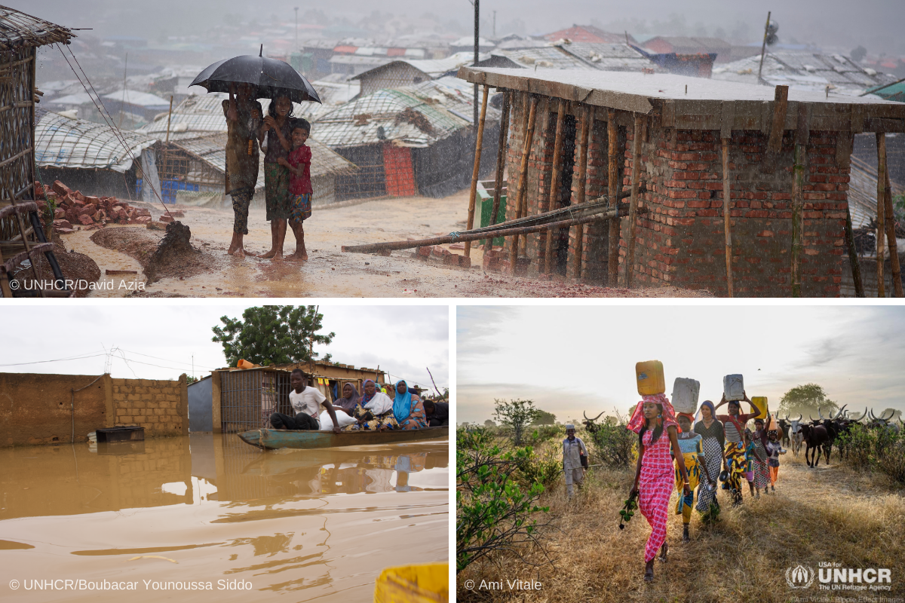
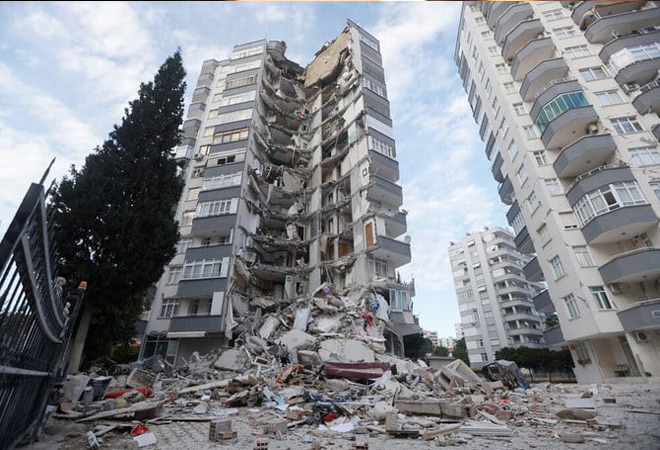
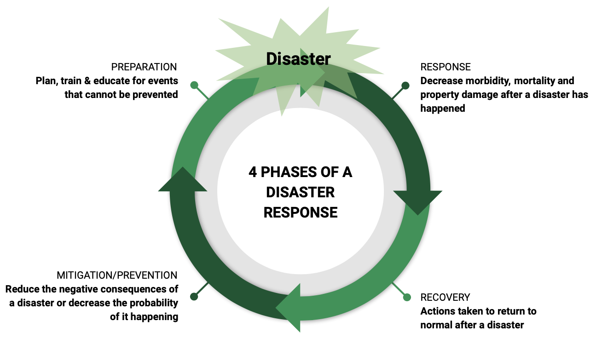
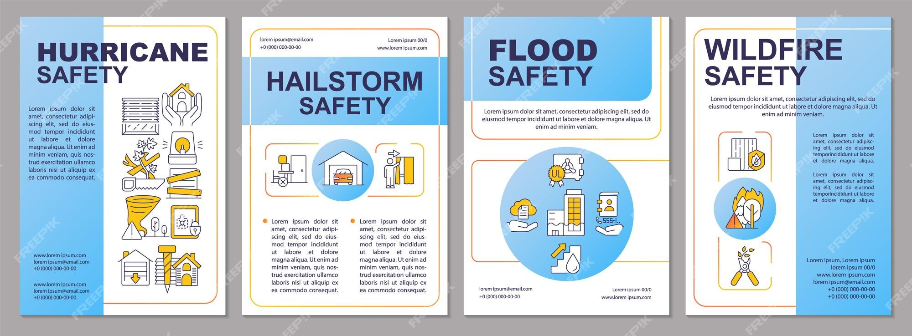

Type of Disaster Management
1.Flood
Floods natural disasters that result from an overflow of water onto normally dry land. They can occur due to various factors, including heavy rainfall, river overflow, storm surges, or the rapid melting of snow. Floods have devastating consequences, affecting both the environment and human lives.The impact of floods is often catastrophic. They lead to the destruction of homes, infrastructure, and farmlands. Lives are endangered as people are swept away by fast-flowing waters or become trapped in submerged areas.Floods cause significant economic damage, costing billions of dollars in recovery and rebuilding efforts. Waterborne diseases can also spread in the aftermath of floods, posing further health risks.Natural ecosystems are disrupted as floods erode soil, alter river courses, and drown plant life. Aquatic habitats may be disturbed or destroyed, affecting fish and other wildlife.Preventing and mitigating floods involve a combination of strategies, including proper land use planning, constructing flood defenses, and early warning systems. Resilience-building and community preparedness are equally essential.While we cannot control when or where floods occur, we can take steps to reduce their impact and save lives. Understanding the causes and effects of floods is the first step toward better disaster management.
.jpeg )
2.earthquakes
Earthquakes, a geological phenomenon, occur when there is a sudden release of energy in the Earth's crust, leading to ground shaking. They are one of the most powerful and unpredictable natural disasters, with far-reaching consequences.The primary cause of earthquakes is the movement of tectonic plates, which can lead to fault lines or fractures in the Earth's crust. Other causes include volcanic activity and human-induced activities, like mining or reservoir-induced seismicity.The effects of earthquakes can be catastrophic, resulting in loss of life, destruction of infrastructure, and economic upheaval. Ground shaking, aftershocks, and tsunamis are common consequences.Preparedness for earthquakes involves early warning systems, building codes that ensure earthquake-resistant construction, and community drills. Responding to an earthquake often requires rapid search and rescue operations and providing aid to affected populations.Recovery and rebuilding after an earthquake is a complex and lengthy process. Reconstruction efforts involve not only rebuilding homes and infrastructure but also addressing the psychological and emotional trauma experienced by survivors.While we cannot prevent earthquakes, understanding their causes, effects, and adopting proactive measures, can help mitigate their impact and build more resilient communities. Earthquake preparedness and mitigation are essential to safeguard lives and property.

3.Wildfires
Wildfires, often referred to as forest fires or bushfires, are one of the most destructive natural disasters, characterized by the uncontrolled and rapid spread of fire in vegetated areas. These infernos can wreak havoc on ecosystems, communities, and livelihoods, and their occurrence is influenced by a combination of factors.The primary cause of wildfires is the ignition of dry vegetation, often sparked by human activities, lightning strikes, or volcanic eruptions. Climate conditions, particularly dry weather and strong winds, play a significant role in the spread of wildfires.The effects of wildfires are devastating, encompassing loss of life, destruction of homes, and extensive damage to forests and wildlife habitats. The economic and environmental repercussions are long-lasting.Preventing and mitigating wildfires involves a combination of strategies, such as controlled burns, firebreaks, and public education on fire safety. Emergency response teams are critical for containment and evacuation efforts.Recovery and restoration efforts following a wildfire are complex, involving habitat regeneration and rebuilding homes and infrastructure. Additionally, addressing the psychological trauma experienced by affected communities is an essential part of the recovery process.Understanding the causes, effects, and mitigation strategies related to wildfires is crucial for minimizing their impact and safeguarding lives, ecosystems, and property. Proactive fire management and community preparedness are vital in reducing the devastation caused by these uncontrolled natural infernos.
.avif)
4.Hurricanes
Hurricanes, also known as cyclones or typhoons in different regions, are natural disasters characterized by powerful, rotating storm systems that form over warm ocean waters. These massive storms are among the most destructive and deadly phenomena on Earth.The primary cause of hurricanes is the interaction between warm ocean water and moist air, creating a low-pressure system. As warm, moist air rises, it cools and condenses, releasing vast amounts of energy, which fuels the storm.The effects of hurricanes are widespread and severe, including strong winds, torrential rainfall, storm surges, and flooding. These events result in catastrophic damage to coastal communities, infrastructure, and ecosystems. Loss of life is a tragic consequence.Hurricane preparedness is critical for areas prone to these storms. Early warning systems, evacuation plans, and storm shelters are essential components of disaster management. Government agencies and meteorological services play a pivotal role in monitoring and forecasting hurricanes.Recovery and rebuilding in the aftermath of a hurricane are extensive and resource-intensive. It involves restoring power, infrastructure, and rebuilding communities. These efforts may take years and require substantial financial resources.Understanding the causes, effects, and mitigation strategies related to hurricanes is crucial for minimizing their imp .act and safeguarding lives and property. By proactively preparing and responding to hurricanes, we can reduce their devastating consequences and protect vulnerable coastal regions.

5.Tornado
Tornadoes are one of the most violent and destructive natural phenomena on Earth. These intense, rotating columns of air extend from powerful thunderstorms down to the ground, causing havoc in their path. Tornadoes are unpredictable and can occur in various parts of the world, with the United States experiencing the most tornadoes.The primary cause of tornado formation is the collision of warm, moist air with cold, dry air, creating a strong updraft and wind rotation. Tornadoes are categorized using the Enhanced Fujita (EF) scale, which measures their intensity and damage potential.The effects of tornadoes are often catastrophic. They can level buildings, uproot trees, and cause loss of life. The aftermath of a tornado is marked by the devastation of communities, requiring extensive recovery and rebuilding efforts.Tornado preparedness is crucial for communities located in tornado-prone areas. Early warning systems and tornado shelters are essential elements of disaster management. Swift response efforts, including search and rescue operations, are critical for saving lives in the wake of a tornado.Recovery and rebuilding in the aftermath of a tornado involve not only the physical reconstruction of homes and infrastructure but also the emotional recovery of affected individuals. Tornado survivors often face trauma and the loss of cherished possessions.Understanding the causes and effects of tornadoes, coupled with proactive measures such as tornado early warning systems and community preparedness, is key to mitigating their impact. Tornadoes are a natural force to be reckoned with, but through education, preparation, and resilient response, we can better protect ourselves and our communities from their fury.

6.industrial accidents
Industrial preparedness in disaster management is crucial for mitigating risks and safeguarding both human lives and economic assets. Industries must develop comprehensive emergency response plans tailored to their specific risks, such as chemical spills, fires, or structural failures. Regular drills and simulations help ensure that employees are well-trained and can respond effectively in crisis situations. Implementing robust safety protocols, including the use of advanced monitoring systems, enhances early detection of potential threats. Industries should also invest in infrastructure resilience, reinforcing structures to withstand natural disasters. Emergency preparedness extends beyond the workplace, involving coordination with local emergency services, community outreach, and public awareness campaigns. Maintaining stockpiles of essential supplies, establishing communication channels, and having contingency plans for business continuity contribute to effective industrial preparedness. Collaboration with regulatory bodies ensures compliance with safety standards and regulations. In the aftermath of a disaster, industries play a vital role in the recovery process by contributing resources, expertise, and supporting local communities. Through a proactive and collaborative approach to industrial preparedness, the adverse effects of disasters can be minimized, fostering resilience and sustainable development.

Impacts of Disaster management
.png)
Hurricanes, also known as cyclones or typhoons in different regions, are natural disasters characterized by powerful, rotating storm systems that form over warm ocean waters. These massive storms are among the most destructive and deadly phenomena on Earth.The primary cause of hurricanes is the interaction between warm ocean water and moist air, creating a low-pressure system. As warm, moist air rises, it cools and condenses, releasing vast amounts of energy, which fuels the storm.The effects of hurricanes are widespread and severe, including strong winds, torrential rainfall, storm surges, and flooding. These events result in catastrophic damage to coastal communities, infrastructure, and ecosystems. Loss of life is a tragic consequence.Hurricane preparedness is critical for areas prone to these storms. Early warning systems, evacuation plans, and storm shelters are essential components of disaster management. Government agencies and meteorological services play a pivotal role in monitoring and forecasting hurricanes.Recovery and rebuilding in the aftermath of a hurricane are extensive and resource-intensive. It involves restoring power, infrastructure, and rebuilding communities. These efforts may take years and require substantial financial resources.Understanding the causes, effects, and mitigation strategies related to hurricanes is crucial for minimizing their impact and safeguarding lives and property. By proactively preparing and responding to hurricanes, we can reduce their devastating consequences and protect vulnerable coastal regions.
disasters management have substantial economic repercussions, including property damage, loss of productivity, and agricultural losses. Rebuilding and repairing damaged infrastructure and homes can be costly.
Disasters disrupt businesses, leading to reduced output and income. Agriculture suffers from crop damage, livestock losses, and decreased yields, impacting food prices.
Insurance costs tend to rise due to more frequent and severe disasters, affecting individuals and businesses. Disrupted supply chains cause delays and increased costs.
Government expenditures for disaster response and recovery divert funds from other essential programs. Tourism-dependent regions experience a decline in visitors, impacting the tourism industry.
Small businesses, lacking resources for quick recovery, are particularly vulnerable. Job losses often follow business closures, affecting livelihoods.
Some disasters have long-term economic effects, making mitigation and preparedness crucial in the face of climate change-induced disasters.

Displacement due to a natural disaster involves people being forced to leave their homes temporarily or permanently because of events like hurricanes, earthquakes, floods, wildfires, and more. The consequences of displacement can be significant, including loss of shelter, belongings, and a sense of security. Those displaced often require assistance for immediate needs like shelter, food, water, and medical care. It's a complex and challenging situation, and government agencies, humanitarian organizations, and communities usually work together to provide support and help those affected by natural disasters rebuild their lives. If you have specific questions about displacement or need more information, please feel free to ask.

Preserving infrastructure in disaster management is crucial for minimizing damage and ensuring a swift recovery. This involves:
1. Risk Assessment: Identifying vulnerabilities and potential hazards in infrastructure.
2. Resilient Design: Constructing buildings and systems to withstand disasters.
3. Strategic Planning: Developing comprehensive disaster response and recovery plans.
4. Early Warning Systems: Implementing advanced warning systems to alert communities.
5. Community Education: Educating the public on disaster preparedness and response.
6. Infrastructure Reinforcement: Strengthening critical structures to withstand natural disasters.
7. Resource Stockpiling: Having essential supplies ready for immediate deployment.
8. Interagency Coordination: Coordinating efforts among various agencies for efficient response.
9. Communication Networks: Establishing robust communication channels for real-time updates.
10. Evacuation Planning: Organizing and practicing evacuation procedures.
11. Training Programs: Conducting drills and training sessions for emergency responders.
12. Adaptive Policies: Implementing policies that adapt to changing disaster scenarios.
13. Infrastructure Monitoring: Utilizing technology to monitor the condition of infrastructure.
14. International Collaboration: Collaborating with neighboring countries for cross-border support.

In disaster management, preparedness and response are intertwined components that aim to enhance overall resilience:
1. Preparedness:
- Planning: Developing comprehensive emergency plans outlining roles, responsibilities, and communication strategies.
- Training: Conducting drills and exercises to ensure that individuals and organizations are familiar with their roles and can respond effectively.
- Resource Management: Stockpiling essential supplies, establishing evacuation routes, and creating shelters to support affected populations.
- Community Education: Informing the public about potential risks, safety measures, and evacuation procedures.
2. Response:
- Immediate Action: Mobilizing first responders, emergency services, and resources to address the immediate impact of the disaster.
- Coordination:* Collaborating with various agencies, organizations, and volunteers to streamline efforts and allocate resources efficiently.
- Communication:* Maintaining clear and timely communication with the public to provide instructions, updates, and safety information.
- Search and Rescue:* Conducting operations to locate and assist individuals in distress.
The seamless integration of preparedness and response measures enhances a community's ability to effectively manage and recover from disasters.

Safety Guidelines
Safety guidelines for different natural disasters are essential for staying prepared and minimizing risks. Here are some general safety guidelines for the mentioned natural disasters:
> Flood:
1. Be aware of flood risk in your area and stay informed through weather updates.
2. Create an emergency kit with essential supplies, including non-perishable food, water, flashlights, and a first aid kit.
3. Evacuate to higher ground if authorities issue a flood warning or evacuation order.
4. Do not attempt to walk or drive through flooded areas, as water currents can be deceptive and strong.
5. Disconnect utilities to prevent electrical hazards.
> Earthquake:
1. Drop, cover, and hold on during the quake to protect yourself.
2. If indoors, stay away from windows, heavy objects, and exterior walls.
3. After the shaking stops, be prepared for aftershocks.
4. Have an emergency kit ready with water, food, and essential supplies.
5. Identify safe meeting points for your family.
>Hurricane:
1. Monitor weather updates and follow evacuation orders if issued.
2. Secure loose objects around your property to prevent them from becoming projectiles.
3. Prepare an emergency kit with food, water, first aid supplies, and important documents.
4. Stay inside during the storm and away from windows.
5. Be prepared for flooding, high winds, and power outages.
>Wildfire:
1. Create a defensible space around your property by clearing vegetation.
2. Keep gutters, roofs, and eaves clear of debris.
3. Have an emergency kit ready, including N95 respirator masks.
4. Follow evacuation orders and leave early if necessary.
5. Stay informed about the fire's status through local authorities.
>Tornadoes:
1. Have a designated tornado shelter or a safe interior room in your home.
2. Stay informed through weather alerts and sirens.
3. If caught in a vehicle, abandon it and seek shelter in a sturdy building or lie flat in a low-lying area.
4. Protect your head and neck with sturdy furniture or a mattress during the tornado.
5. After the tornado, watch out for downed power lines and other hazards.
Remember that preparedness and staying informed are key to surviving natural disasters. Always follow local authorities' instructions and adapt these guidelines to your specific situation.

Contact Us
If you have any questions or want to get in touch, please fill out the contact form below.
link to Disaster Management